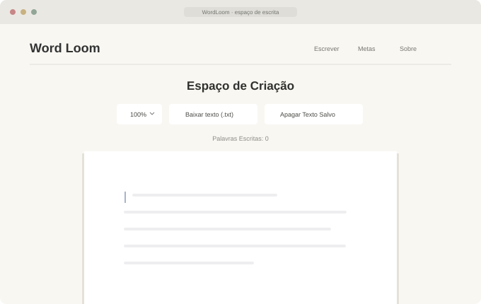

Lógica de algoritmos
Desenvolvendo o raciocínio para organizar passos e resolver problemas.
IDEIAS EM PRÁTICA
Da curiosidade
ao projeto.
Estudante de Análise e Desenvolvimento de Sistemas. Transformo o que estou aprendendo em projetos, experimentos e novas possibilidades.
Análise e Desenvolvimento
de Sistemas
HTML, CSS
e JavaScript
Projetos pessoais
e aprendizado
02 / PROJETOS
Ideias que ganharam forma enquanto eu aprendia a construir.
03 / EM ESTUDO
O foco de agora. Novos assuntos vão entrar aqui conforme o caminho avança.
Desenvolvendo o raciocínio para organizar passos e resolver problemas.
Aprendendo como estruturar, relacionar e trabalhar com informações.
Refletindo sobre escolhas, responsabilidade e relações humanas.
04 / SOBRE
Sou Trazendo. Tenho formação técnica em eletrotécnica e atualmente estudo Análise e Desenvolvimento de Sistemas.
Gosto de explorar áreas diferentes, entender como as coisas funcionam e aprender colocando a mão no código. Minha trajetória envolve atividades técnicas, organização e contato com pessoas; a comunicação e a troca de ideias fazem parte desse processo.
Aqui reúno projetos pessoais que nascem da curiosidade e colocam o aprendizado em prática. O WordLoom começou assim, no início da faculdade. Este espaço acompanha a evolução das minhas ideias e do que estou construindo.
